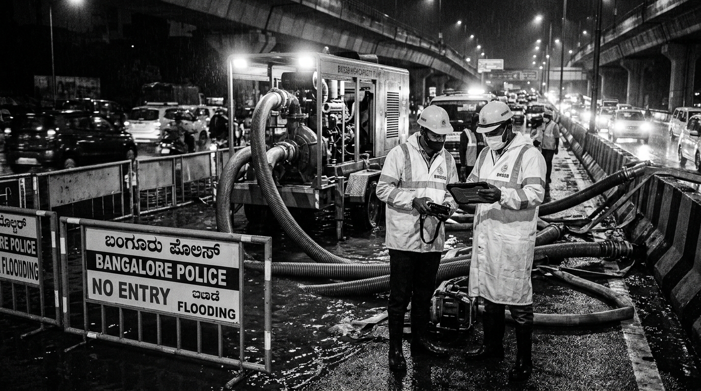

Emergency Response & City Team Work Orders
Three city departments have been mobilized to resolve the Bellandur flood: water pump trucks to remove water, traffic police to divert cars, and municipality workers to clear the blocked drain.
Work Orders for City Teams & Public SMS Alert
Real-time instructions sent directly to water engineers, traffic wardens, and drain cleaning crews.
Water Board (BWSSB): Emergency Pump Trucks
What this team will do: Send 2 heavy-duty diesel water pump trucks to the flooded Bellandur Gate junction. Lower large suction pipes into the deepest part of the road puddle (under the metro line) and pump water straight into the downstream canal heading toward Bellandur Lake.

Water pump truck working behind police safety barricades on the flooded road.
High-speed rotary pump running at full capacity to drain the road quickly.
Traffic Police: Reroute Vehicles
What this team will do: Put up physical barricades and warning signs at the Iblur Flyover. Divert cars, autos, and buses towards Sarjapur Road so vehicles do not enter the deep water and stall their engines.
Municipality (BBMP): Clear Drain
What this team will do: Send a 6-person emergency cleaning crew with long hooks and safety gear to clear plastic bottles, garbage bags, and tree branches blocking the storm drain grating.
Emergency SMS Sent to Local Residents
"CITIZEN ALERT · BENGALURU EMERGENCY HELPLINE: Road waterlogging of about 1.5 to 2 feet has been reported at Bellandur Gate on Outer Ring Road due to heavy rain. High-power water pump trucks are arriving now. Drivers are advised to use Sarjapur Road detour."
"ಸಾರ್ವಜನಿಕ ಪ್ರಕಟಣೆ · ಬೆಂಗಳೂರು ತುರ್ತು ಸಹಾಯವಾಣಿ: ಭಾರಿ ಮಳೆಯಿಂದಾಗಿ ಹೊರ ವರ್ತುಲ ರಸ್ತೆಯ ಬೆಳ್ಳಂದೂರು ಗೇಟ್ ಬಳಿ ಸುಮಾರು 2 ಅಡಿ ನೀರು ನಿಂತಿದೆ. ನೀರನ್ನು ಹೊರಹಾಕಲು ಪಂಪ್ಗಳನ್ನು ಕಳುಹಿಸಲಾಗಿದೆ. ವಾಹನ ಸವಾರರು ಸರ್ಜಾಪುರ ರಸ್ತೆ ಮೂಲಕ ಪರ್ಯಾಯ ಮಾರ್ಗ ಬಳಸಲು ಕೋರಲಾಗಿದೆ."
Approve & Send Orders to Field Teams
Click below to confirm and transmit these orders to the Water Board, Traffic Police, and BBMP control rooms, and dispatch the public SMS alert.